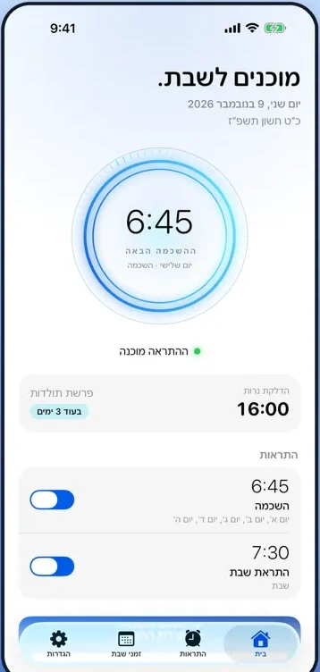
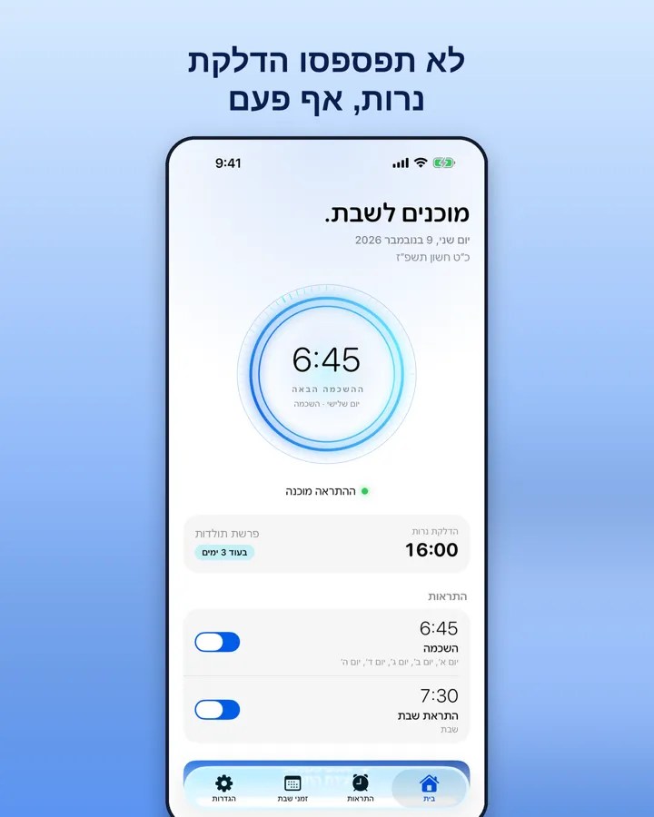
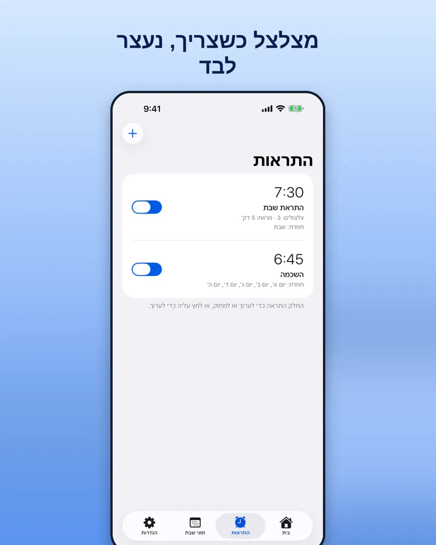
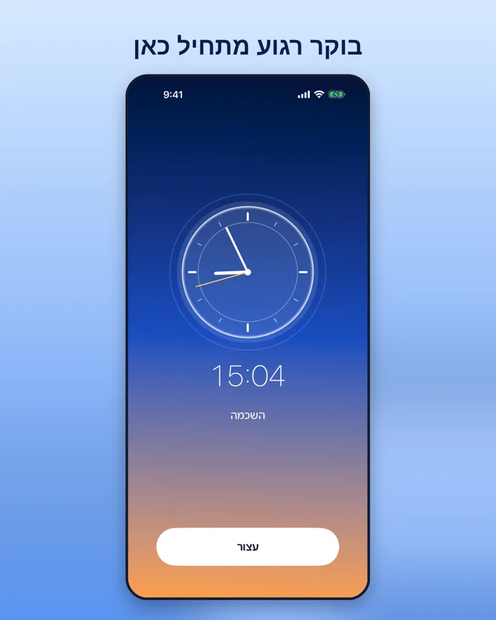
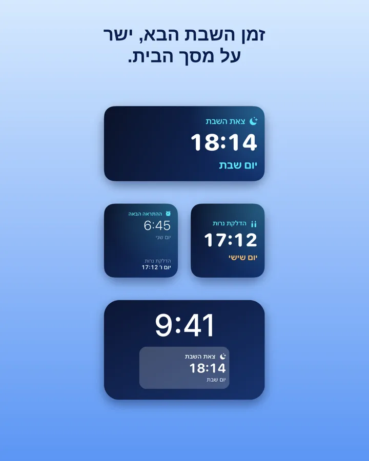

Shabbat Waker
שעון מעורר שמכיר את השבת. התראות רגילות שמצלצלות גם כשהאייפון על שקט, והתראת שבת עדינה שנפסקת מעצמה.

ככה היא נראית






מי משתמש בשעון שבת
מי שקם מוקדם
התראות רגילות שמצלצלות גם כשהאייפון על שקט, כדי שלא תפספסו את הבוקר.
מי שומר שבת
התראת שבת עדינה שנפסקת מעצמה אחרי כמה שניות, בלי לגעת במכשיר.
מי שרוצה זמנים מדויקים
הדלקת נרות וצאת שבת לפי המיקום, יחד עם פרשת השבוע והחגים.
מה טוב לדעת
התראות שמצלצלות
התראות רגילות הן שעוני מעורר של המערכת, ולכן הן מצלצלות גם כשהאייפון על שקט.
התראת שבת
בשבת ההתראה היא הודעת מערכת רגילה. היא נפסקת מעצמה אחרי 10 עד 50 שניות, בלי לגעת במכשיר.
זמנים לפי המיקום
הדלקת נרות וצאת שבת לפי המיקום שלכם, יחד עם פרשת השבוע והחגים.
בכל מקום באייפון
ווידג׳טים למסך הבית ולמסך הנעילה, Apple Watch ו-Siri.
פרטיות
לחישוב הזמנים נשלח רק המיקום המדויק לשירות Hebcal. בלי חשבון, בלי פרסומות ובלי מעקב.
חמש שפות
עברית, אנגלית, צרפתית, רוסית וספרדית.
בגילוי נאות
חינם, עם Pro אופציונלי
ההורדה והליבה חינמיות: התראות, זמני הדלקת נרות וצאת שבת, וווידג׳טים. יש גם שדרוג Pro אופציונלי. שום דבר בו אינו חובה.
פרטיות
בלי חשבון, בלי פרסומות ובלי מעקב. לחישוב הזמנים נשלח רק המיקום המדויק לשירות Hebcal.
חמש שפות
עברית, אנגלית, צרפתית, רוסית וספרדית.
מקהילת בית אל
האפליקציה נבנתה בקהילת בית אל, ונשארת פשוטה וממוקדת.
כל מה ששואלים
האם ההתראה מצלצלת כשהאייפון על שקט?
כן. התראות רגילות הן שעוני מעורר של המערכת, ולכן הן מצלצלות גם על שקט.
מה קורה בשבת?
בשבת ההתראה היא הודעת מערכת רגילה. היא נפסקת מעצמה אחרי 10 עד 50 שניות, בלי לגעת במכשיר.
איזה מידע נשלח, ולמי?
לחישוב הזמנים נשלח רק המיקום המדויק לשירות Hebcal. אין חשבון, פרסומות או מעקב. פרטים מלאים במדיניות הפרטיות.
האם האפליקציה חינמית?
כן. ההורדה והליבה חינמיות, ויש גם שדרוג Pro אופציונלי עם תוספות. אפשר להשתמש באפליקציה כמו שהיא.
איפה היא עובדת?
באייפון, עם ווידג׳טים למסך הבית ולמסך הנעילה, Apple Watch ו-Siri.